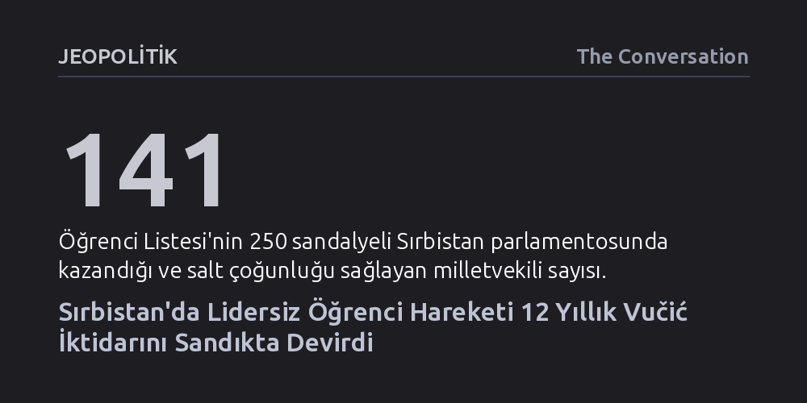

JEOPOLITIK · The Conversation · 2026-10-27
Sırbistan'da Novi Sad tren garı faciasıyla sokağa çıkan lidersiz öğrenci hareketi, genel seçimlerde parlamentodaki 250 sandalyeden 141'ini kazanarak Aleksandar Vučić'in 12 yıllık iktidarına son verdi. Bu zafer, taban örgütlenmesinin otoriter yönetimleri sandıkta yenebileceğini gösteriyor.
Kökleşmiş otoriter rejimlerin yalnızca geleneksel liderlerle değil, mağduriyet psikolojisini aşıp sorumluluk alan lidersiz gençlik hareketleriyle de sandıkta alaşağı edilebileceğini kanıtlıyor.

Sırbistan'da yapılan genel seçimlerin ilk sonuçları, ülke siyasetinde benzeri görülmemiş bir kırılmaya işaret ediyor. Herhangi bir genel başkanı veya hiyerarşik lideri bulunmayan, toplumun farklı kesimlerinden siyaset deneyimi olmayan gençleri aday gösteren 'Öğrenci Listesi', 250 sandalyeli parlamentoda 141 sandalye kazanarak salt çoğunluğu elde etti. İktidardaki Sırp İlerleme Partisi ise 104 sandalyede kalarak Cumhurbaşkanı Aleksandar Vučić’in 12 yıllık kesintisiz egemenliğinin sonunu getirdi.
Seçim gecesi yaptığı konuşmada Vučić'in yenilgiyi kabul ederek sarf ettiği "Bu seçimleri kaybettiğimiz açık" itirafı, sokakta filizlenen bir gençlik dalgasının sandıkta kurumsal güce galebe çaldığını tescilledi. Devlet aygıtını ve ana akım medyayı bütünüyle kontrol eden bir rejime karşı kazanılan bu zafer, demokratik ilkelere bağlı bir taban hareketinin otoriterleşmeyi kırabileceğini gösterdi.
Bu siyasi depremin fitili, 2024 yılında Sırbistan'ın kuzeyindeki Novi Sad tren istasyonunda henüz yeni yenilenmiş çatının çökmesi ve 16 kişinin hayatını kaybetmesiyle ateşlendi. Kamuoyunda ihale süreçlerindeki yolsuzlukların ve inşaat standartlarının düşürülmesinin faciaya yol açtığı iddiaları hızla yayıldı. Hükümet iddiaları reddetse de yaşanan felaket, toplumda uzun süredir biriken öfkeyi sokağa taşıdı.
Öğrencilerin öncülük ettiği protestolar kısa sürede ülke geneline yayıldı; ancak sokaktaki mücadele ciddi bedellerle karşılaştı. Protestolara katılan gençler, hükümet güdümlü çetelerin tacizine uğradıklarını, kamu binalarının yakınında fiziki şiddet ve tehdit gördüklerini, hatta kendi evlerinde bile güvende hissetmediklerini anlattılar.
Baskılar yalnızca sokakla sınırlı kalmadı; öğrenciler üniversitelerde kendilerini desteklemeyen akademisyenlerin ve karşıt görüşlü akranlarının dışlamasıyla yüzleşti. Dahası, devlet medyasının 'dış güçlerin maşası' propagandasından etkilenen yaşlı aile fertleriyle yaşanan kopuşlar, hareketin içindeki gençlerin omuzladığı duygusal yükü katbekat artırdı.
Öğrenci hareketini klasik muhalefetten ayıran en temel unsur, kendilerini edilgen bir kurban olarak görmeyi kesin bir dille reddetmeleri oldu. Hükümetin yolsuzluklarına işaret etmekle yetinmeyip ülkenin bu noktaya gelmesinde toplumun sessizliğinin de payı olduğunu savunarak siyasi sorumluluğu doğrudan üstlendiler. Bu bilinç, gençlerin tutuklanma korkusunu aşmasını ve lidersiz bir taban örgütlenmesini sandığa taşımasını sağladı.
Hareket aynı zamanda iktidarın milliyetçi kutuplaştırma dilini de boşa çıkardı. Sırbistan bayrağı gibi ulusal sembolleri eylemlerde sahiplenerek vatan hainliği suçlamalarını etkisiz hale getirdiler. Dahası, geleneksel olarak Sırp milliyetçiliğiyle gerilim yaşayan Müslüman azınlığı eylemlere ve aday listelerine katarak güçlü bir toplumsal mutabakat zemini inşa ettiler.
Sandık başarısının getirdiği sevinç ve coşku dalgası sürerken, yeni dönemin önünde çok ciddi tuzaklar bulunuyor. Siyasi psikoloji çalışmaları, uzun ve yıpratıcı otoriter dönemlerin ardından iktidara gelen hareketlerin intikam ve rövanş duygusuna kapılma riski taşıdığına dikkat çekiyor. Eski rejimin kadrolarından hesap sorma arzusunun çoğulculuk ve adalet ilkelerini gölgede bırakmaması, hareketin en kritik sınavı olacak.
Diğer büyük meydan okuma ise sokakta rüştünü ispatlayan lidersiz ve yatay örgütlenme modelinin, somut icraat üretebilecek bir hükümete nasıl evrileceği sorusu. Özellikle Avrupa Birliği'ne üyelik sürecinin gerektirdiği köklü reformları hayata geçirmek, sokak dayanışmasının ötesinde kurumsal bir devlet aklı ve disiplinli bir yönetim kapasitesi gerektiriyor.